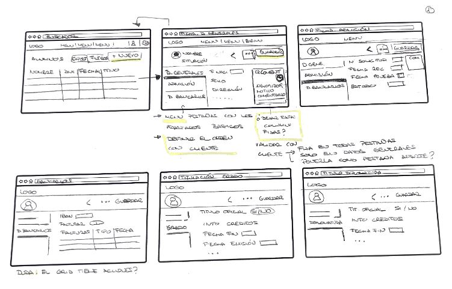
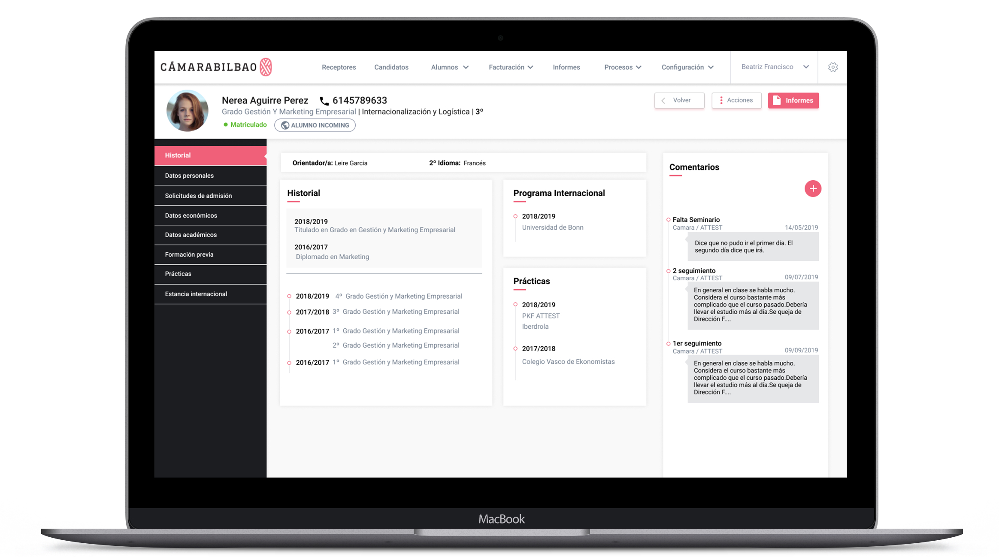

CÁMARA DE COMERCIO DE BILBAO
Prototipado | Diseño | HTML | CSS | Angular
Descripción
Proyecto: Herramienta interna para la gestión de la escuela universitaria de la Cámara de Comercio de Bilbao
Con esta herramienta gestionan desde la matriculación e información de los alumnos a la facturación de los cursos universitarios
FUNCIONES
- Analisis funcional
- UX/UI Design
- Front end designer (HTML/SASS/Angular)
Problemática
- El cliente está acostumbrado a la utilización de su anterior aplicación y es bastante reticente al cambio ya que tiene todos los pasos interiorizados
- La aplicación está conectada con Navision. Hay algunos campos que no se pueden cambiar por exigencias de Navision
- Este proyecto ha ido creciendo durante más de 10 años. Hay nuevos apartados y funcionalidades que se han incluido sin ningún orden ni lógica
El proceso
Se va a ir desarrollando la aplicación por fases, empezando por el módulo de "Alumnos". Se analiza cada una de las pantallas actuales para tener una visión global y poder plantear una nueva estructura que muestre toda la información del alumno mejor organizada y agrupada en pestañas

Se diseña un prototipo y se realiza una reunión con los usuarios potenciales de la aplicación, para que validen la nueva estructura. Se les asigna diferentes tareas a los usuarios para comprobar que encuentrar la información dentro de la nueva estructura
Se plantea la generación de un dashboard con los datos básicos del alumno. Se tienen reuniones con varios usuarios de la aplicación para incluir los datos que consideran más importantes

El siguiente paso es traducir los diseños a HTML y SASS para que se pueda empezar a programar.
Una vez realizado todo el desarrollo de la aplicación en angular trabajo sobre ella para retocar los desajustes producidos durante la fase de desarrollo.